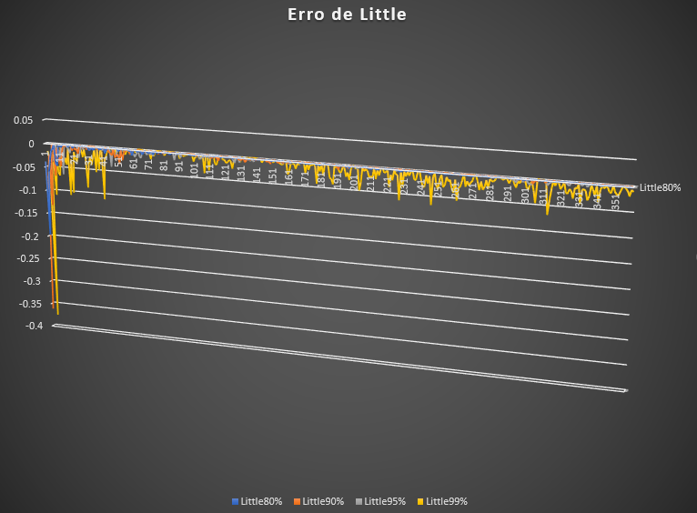

Desktop
Simulador de Filas
O objetivo deste trabalho é coletar dados sobre ocupação, E[N], E[W] e erro de Little a cada 100 segundos de simulação. A taxa média de chegada e o tempo de simulação são fixados. O código fonte do simulador deve ser modificado para permitir a coleta desses dados e ser executado para quatro cenários diferentes, onde é calculado o tempo médio de serviço para atingir as ocupações de 80%, 90%, 95% e 99%.